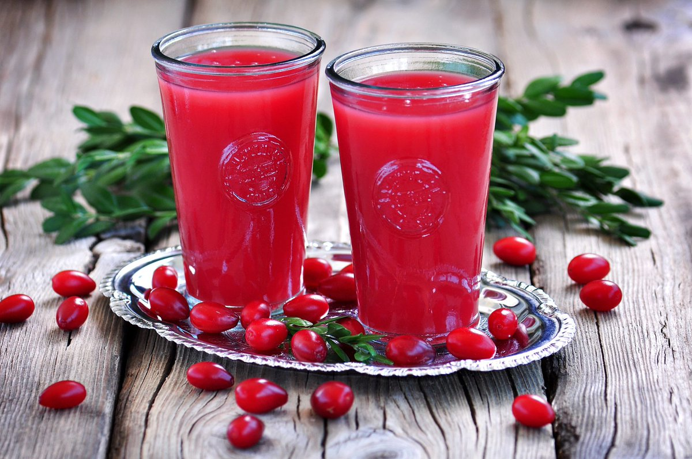

Kisel recipe

Description
Kisel is a classic Eastern European fruit-based dessert that can be enjoyed hot or cold. Kisel is a versatile dessert, and you can experiment with different fruit juices to vary the flavors. It's a traditional and beloved dessert with a jelly-like texture that makes it perfect for special occasions or as a sweet treat on any day. Here's a simple recipe for preparing kisel:
Ingredients
- 2 cups of fruit juice (common choices include cranberry, raspberry, or cherry juice)
- 4 cups of water
- 1/2 to 3/4 cup of sugar (adjust to your desired sweetness)
- 1/4 cup of potato starch or cornstarch
- Fresh berries or fruits (optional, for garnish)
- Sour cream or yogurt (optional, for serving)
Steps
- Mix the Starch: in a small bowl, create a smooth paste by mixing the potato starch (or cornstarch) with a small amount of cold water. Set it aside.
- Combine Juice and Water: in a large saucepan, combine the fruit juice and water. Add the sugar and stir until it dissolves. Heat this mixture over medium heat until it starts to simmer (do not bring it to a boil).
- Thicken the Mixture: slowly pour the starch paste into the simmering juice mixture while stirring continuously. Continue to stir until the mixture thickens to a jelly-like consistency. This should take only a few minutes.
- Cool and Serve: remove the saucepan from the heat and let the kisel cool to room temperature. You can serve it warm or refrigerate it to enjoy it cold. As it cools, it will set further.
- Garnish and Serve: you can garnish the kisel with fresh berries or fruits for added flavor and presentation. Some people like to serve it with a dollop of sour cream or yogurt on top.
- Chill: cover the salad and refrigerate for at least 2-3 hours, or overnight if possible. This allows the flavors to meld together.
- Garnish and Serve: before serving, garnish the Rasols with fresh dill (if using).